这一年，有挑战，有突破，有夜以继日的坚守，也有拨云见日的欣喜。每一份订单的交付、每一次品质的把关、每一个项目的落地，都是双城团队同心协力的见证。
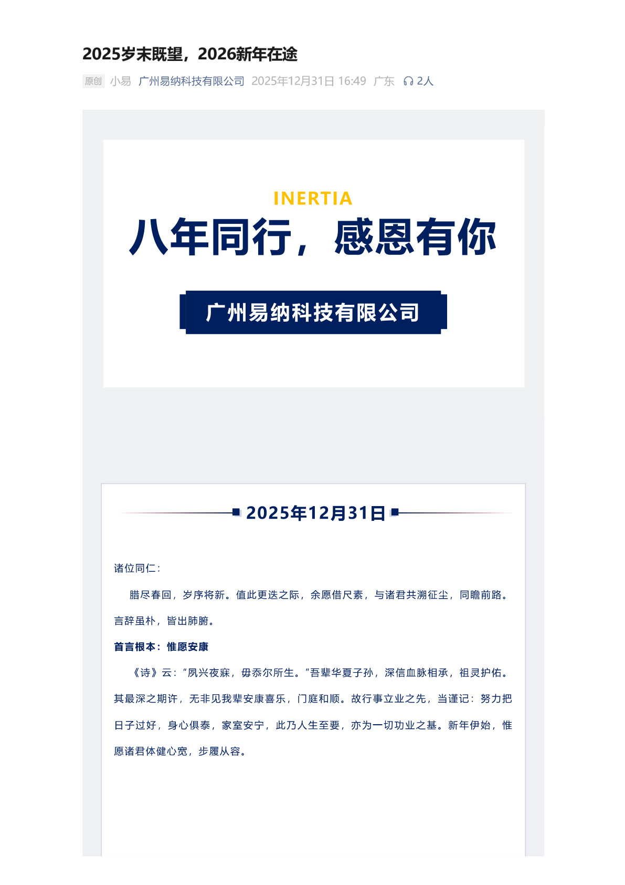
2025年的日历即将翻过最后一页。站在岁末的节点回望，这一年，我们在跨太平洋的双城之间，又完成了一次双向奔赴的接力。从多伦多到广州，一万多公里的距离，12小时的时差，从未阻挡我们前行的脚步。

Part 1 回望2025：这一年，我们走过的路
2025年，对 Inertia 而言，是深耕与成长的一年。我们在医疗器械制造领域持续精进，从精密零组件加工到整机组装测试，从供应链管理到质量体系完善，每一步都走得扎实而坚定。
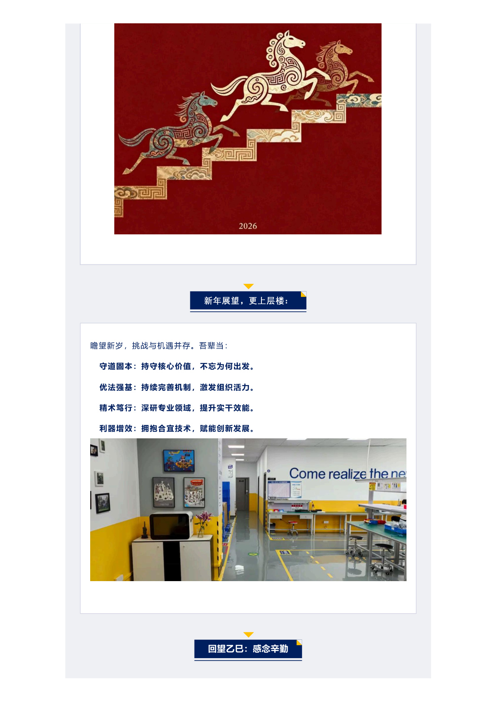
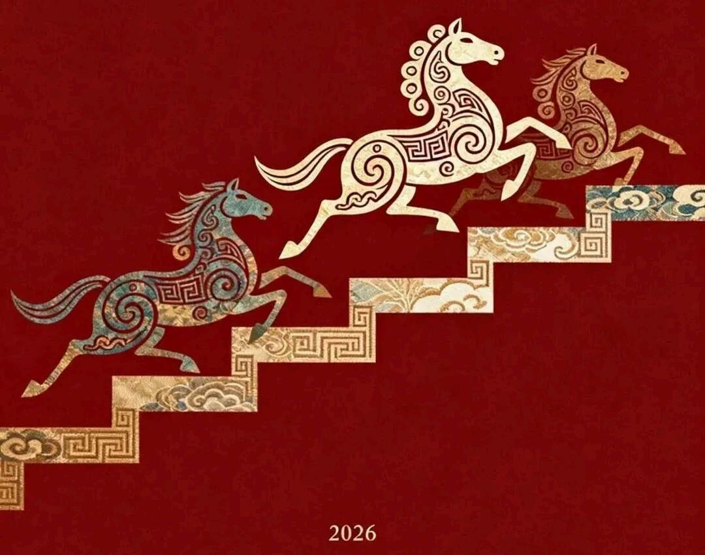
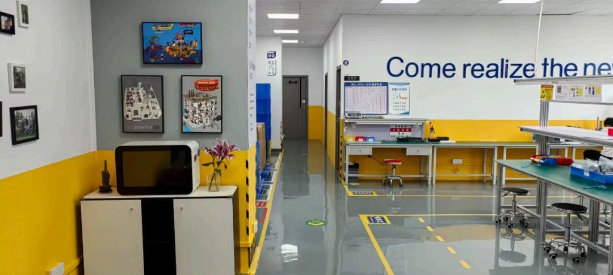
这一年，我们持续优化生产流程，引入智能化管理工具，提升产线效率的同时，严格把控每一个环节的品质标准。无论是多伦多的研发设计团队，还是广州的生产制造团队，都在各自的岗位上全力以赴。
双城联动，昼夜接力。多伦多的夜幕降临时，广州的晨光正好亮起。设计方案跨越太平洋传来，生产线随即启动；品质报告在东方完成，西方团队接力响应客户需求。这不是简单的交接，而是真正的无缝协作。
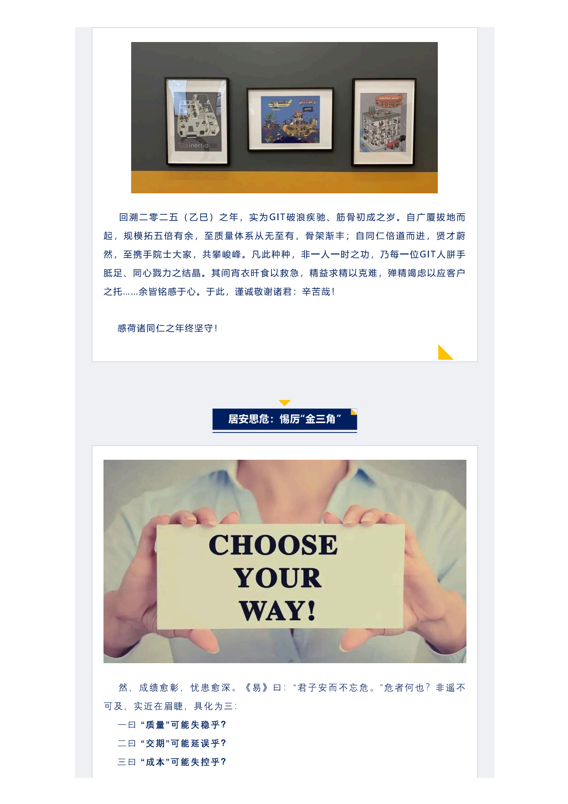
Part 2 双城同心：跨越山海的团队力量
2025年最令我们骄傲的，不是某一个项目的成功，不是某一项指标的达成，而是团队之间日复一日建立起来的信任与默契。这种默契，跨越了地理的距离，穿透了时区的隔阂。
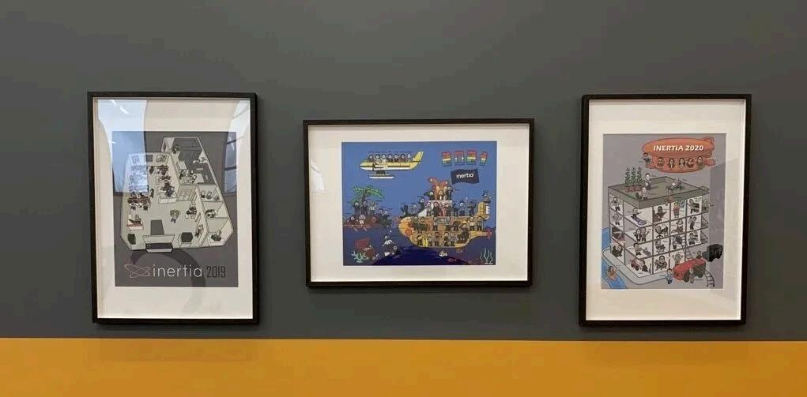
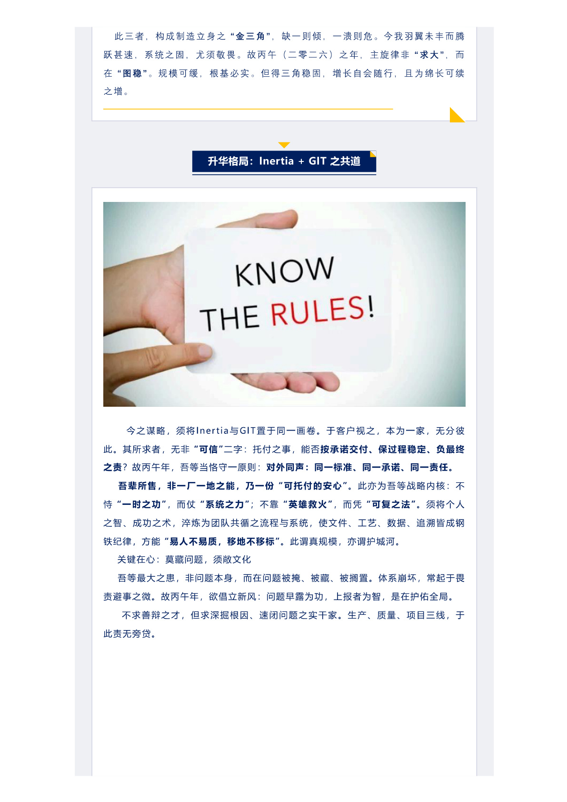
在医疗器械制造这个对精度和可靠性要求极高的领域，团队的协作质量直接决定了产品的交付品质。过去一年，我们见证了许多令人动容的瞬间：凌晨时分多伦多工程师的在线支持、广州团队在节假日赶工的坚守、两地同事为攻克技术难题反复沟通的执着。
正是这些看似平凡的日常，汇聚成了不平凡的一年。
时间是最忠实的记录者。它记录每一次通宵达旦的坚守，每一次跨越时区的接力，每一次从不放弃的坚持。2025，我们没有辜负每一份信任。
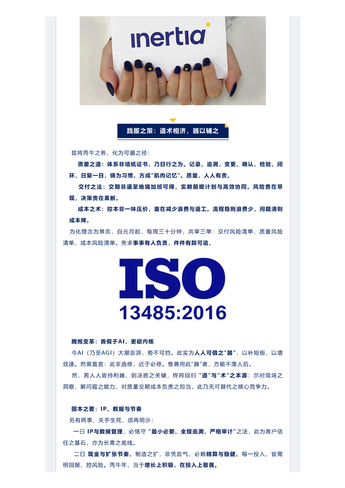
Part 3 展望2026：下一程，山海可越
2026年即将到来。新的一年，我们心中满怀期待，眼中有光。我们为2026年设定了清晰的方向和目标——不仅是业绩数字的增长，更是能力边界的拓展、服务品质的升级、团队文化的深耕。
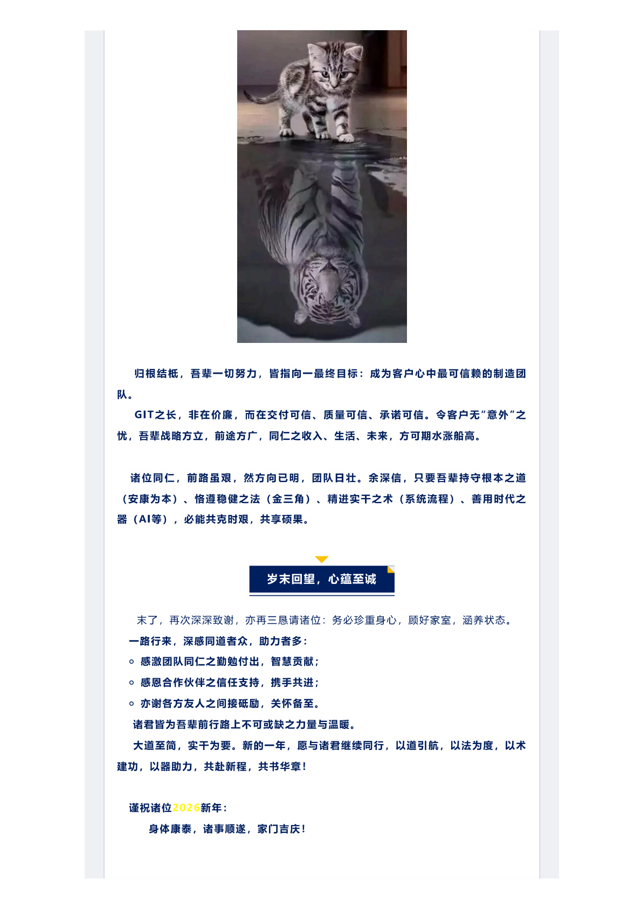
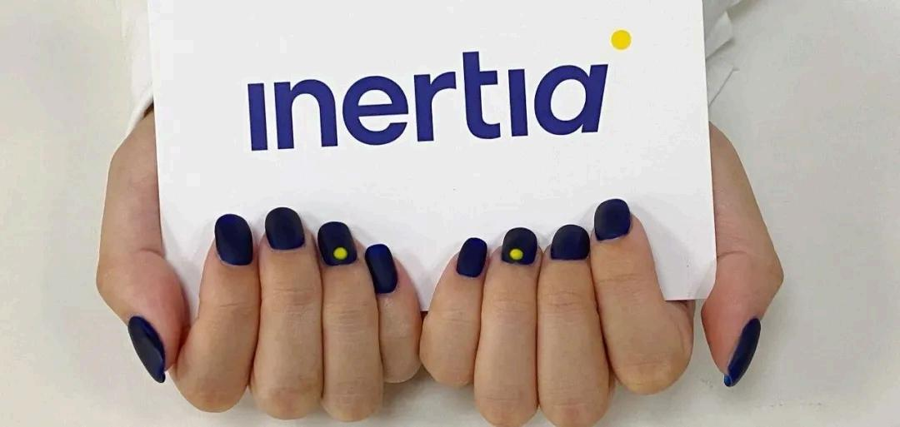
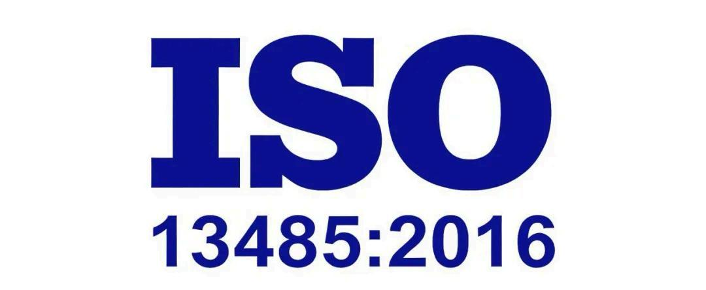
持续技术升级。我们将进一步引入先进的制造装备与数字化管理系统，提升产线的自动化水平和质量控制能力，为客户提供更高精度的医疗器械制造服务。
深化双城协同。多伦多与广州的联动将更加紧密——从项目管理的实时同步，到技术标准的统一对齐，再到人才培养的跨境交流，让双城模式释放更大的协同效能。
拥抱行业变革。医疗器械行业正经历深刻变革，新技术、新标准、新需求层出不穷。我们将保持敏锐的行业洞察，持续学习，灵活应对，在变化中找到属于我们的节奏。
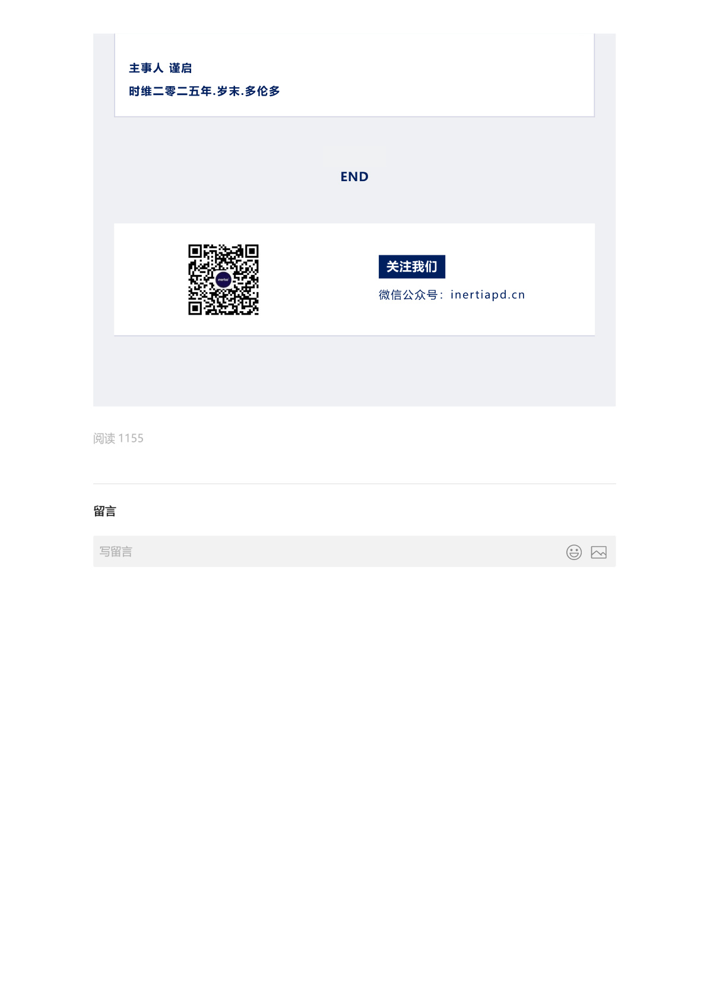
岁末的意义，不在于盘点数字，而在于看见每一个努力过的人。感谢每一位同事的付出，感谢每一位客户的信任，感谢每一位合作伙伴的支持。2025，因为有你们，我们走得很稳；2026，因为有你们，我们走得更远。
2025，岁末既望，感恩同行。2026，新年在途，未来可期。 新的一年，Inertia 将继续坚守品质初心，跨越山海，双向奔赴，为全球医疗器械行业贡献跨太平洋的制造力量。